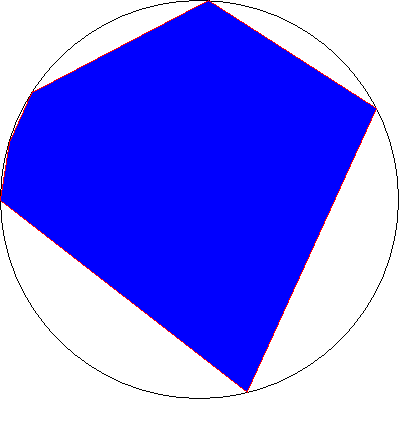

A Cyclic Hexagon
A Cyclic Polygon is a polygon where all of its vertices lie on a circle. Note that all triangles
are cyclic polygons. The area of a triangle can be found from the lengths of its three sides using
Heron's formula. It has been conjectured by D.P. Robins that Heron's formula can be generalized to all cyclic polygons.
Namely, the area of all cyclic polygons can be written as a polynomial equation involving only its side lengths.
In this problem, we will ask you to approximate the area of a Cyclic Polygon, given only its side lengths.
Of course, if you do find the closed form solution, don't forget to mention the problem-setter when you win
the Fields Medal :-).
Input starts with an integer t (t < 10001) on a line denoting the number of test cases to follow.
Each test case starts with a line with the integer n (n < 51), followed by n lines
with the side lengths of the polygon, given in arbitrary order.
All side lengths are floating point numbers with at most 3 digits after the dicimal. The sum
of the lengths of each polygon does not exceed 1000.000, and each side is always positive (>0).
For each case, output the area of the polygon P rounded to 3 digits after the decimal.
If the polygon is not valid, i.e. degenerate, output "0.000" without the quotes.
1
3
3.000
4.000
5.000
6.000
Problem setter: Josh Bao
Alternative Solution: Wenyuan Chen